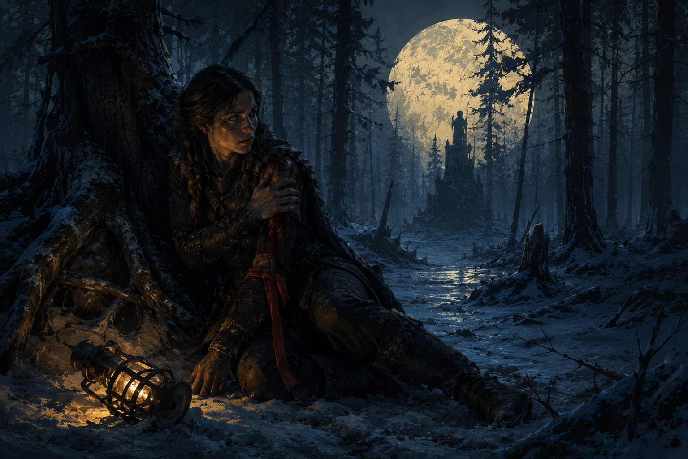
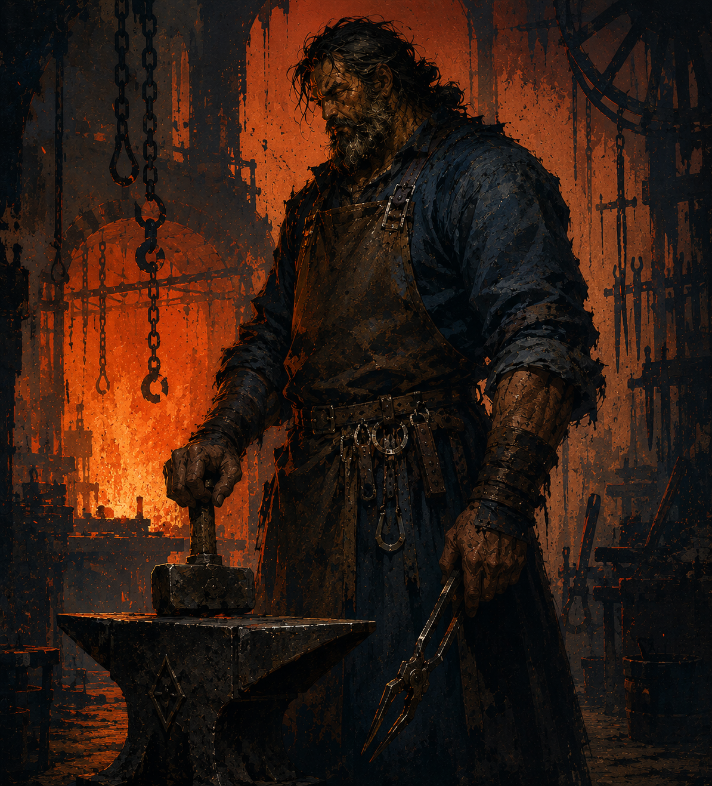
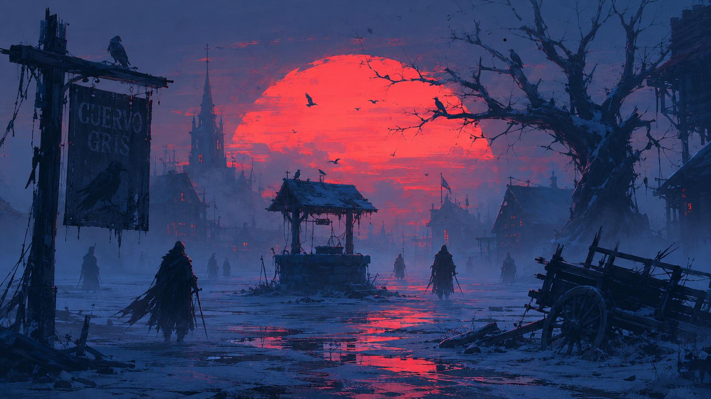
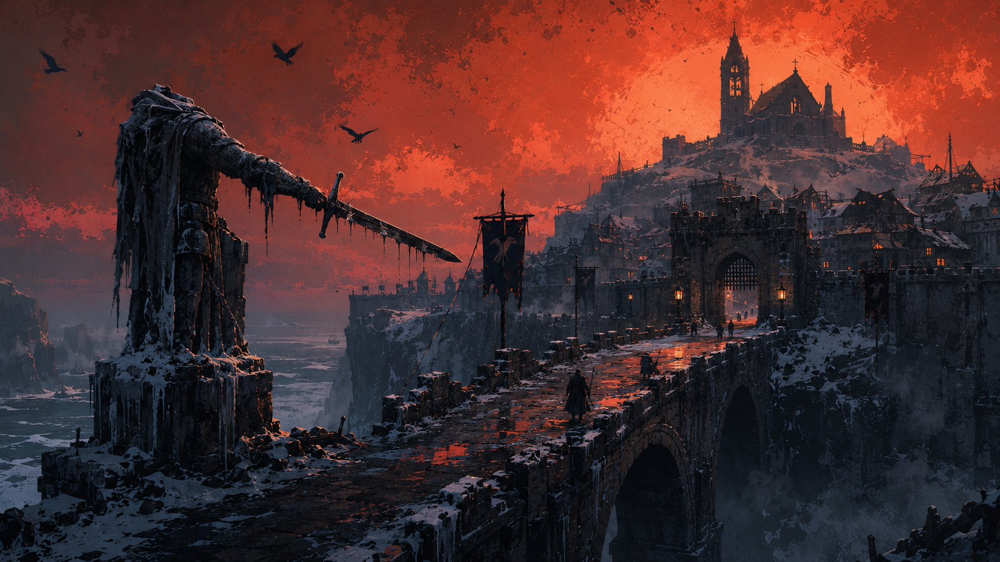
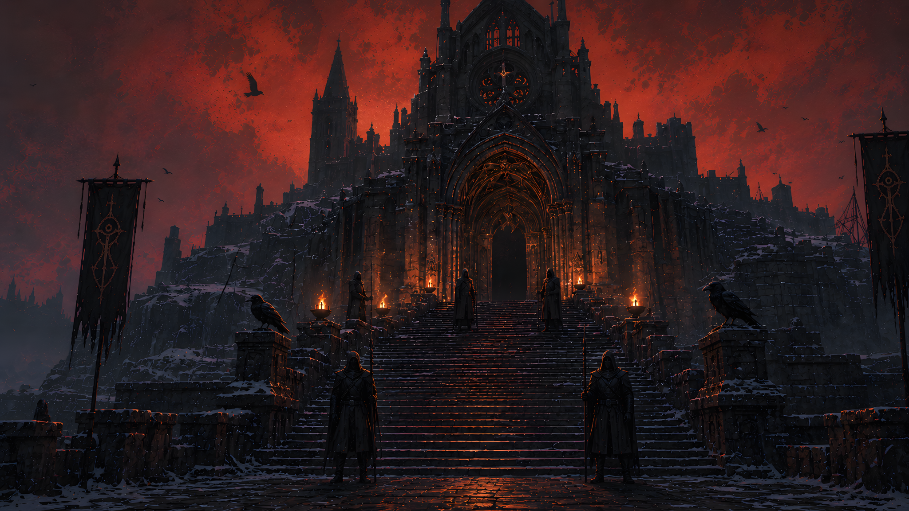

Referencias estéticas de PocketDM
Ocho imágenes aportadas por el usuario, conservadas a resolución completa. Referencias visuales, no canon de personajes o arquitectura.
A · Referencias editoriales principales

Mujer herida en el bosque
Tensión íntima, luz cálida del farol frente al bosque azul y luna monumental.
Ver original PNG
Herrero
Silueta robusta, oficio visible, pincelada erosionada, contraluz naranja de la forja.
Ver original PNG
Plaza del Cuervo Gris
Pozo, cuervos, niebla azul y disco bermellón; profundidad con siluetas.
Ver original PNG
Puente y entrada fortificada
Perspectiva de llegada, estatua monumental, arquitectura escalonada y cielo rojo.
Ver original PNGB · Referencias complementarias de escenarios

Bosque nocturno
Luna ámbar, profundidad por siluetas y textura erosionada.
Ver original PNG
Callejón medieval
Contraluz bermellón y reflejos sobre el suelo.
Ver original PNG
Herrería
Forja naranja, herramientas y arco en penumbra.
Ver original PNG
Templo exterior
Escalera ceremonial, cielo rojo e iluminación selectiva.
Ver original PNG